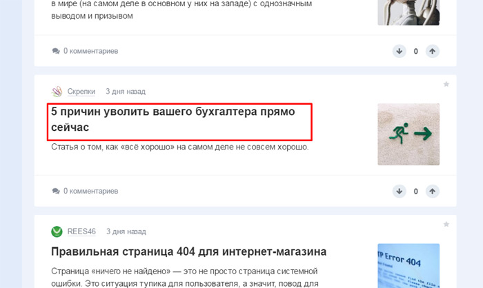

Площадки для публикаций
Как оценить площадки для сторонних публикаций.
Если вы никогда не задумывались о публикации своих статей на сторонних площадках, то очень зря. Почему? Да все просто: размещать свои материалы на авторитетных ресурсах необходимо, чтобы сделать свой бренд более узнаваемым, получить трафик, показать свою экспертность и улучшить ссылочный профиль сайта. О том, где и как искать площадки, мы рассказывали в статье «Формируем репутацию в Интернете».
А чтобы не тратить время и деньги впустую, следует не просто найти, но и оценить качество площадки. О том, как это сделать и на какие показатели смотреть, поговорим ниже.
Для реалистичности представим, что вы нашли ресурс, где хотите разместить статью. Итак, в первую очередь смотрим на эти характеристики:
Целевая аудитория
Обратите внимание, о чем пишут статьи другие компании. Если не видите ни одной публикации, схожей со своей тематикой, то оставляйте этот ресурс и идите искать площадку дальше. Потому что каким бы популярным сайт ни был, если на нем нет потенциальных клиентов, то размещение бессмысленно.
Например, на проекте Spark подписчики делятся своим опытом продвижения стартапов, рассказывают о трудностях развития своего бизнеса.
Но иногда там появляются статьи, которые никак не относятся к основной тематике. Не думаю, что эта компания получила тот эффект от публикации, на который рассчитывала.
Посещаемость
Один из важных показателей. Чем больше посещаемость у площадки, тем больше трафика получите на свой ресурс. Но тут стоит отметить, что не все сайты готовы делиться информацией о количестве пользователей. Узнать примерную цифру можно несколькими способами:
Медиакиты и прайсы на рекламу
Если сомневаетесь в корректности данных, напишите в службу поддержки и уточните цифры. К сожалению, не на всех ресурсах есть подобная информация и не всегда она является правдивой. Поэтому вам также пригодятся и другие методы проверки посещаемости.
Плагин LiveInternet
Если сомневаетесь в корректности данных, напишите в службу поддержки и уточните цифры. К сожалению, не на всех ресурсах есть подобная информация и не всегда она является правдивой. Поэтому вам также пригодятся и другие методы проверки посещаемости. Если сомневаетесь в корректности данных, напишите в службу поддержки и уточните цифры. К сожалению, не на всех ресурсах есть подобная информация и не всегда она является правдивой. Поэтому вам также пригодятся и другие методы проверки посещаемости.
Если сомневаетесь в корректности данных, напишите в службу поддержки и уточните цифры. К сожалению, не на всех ресурсах есть подобная информация и не всегда она является правдивой. Поэтому вам также пригодятся и другие методы проверки посещаемости.
Для проверки большого количества сайтов подойдет сервис Raskruty. Он предоставляет статистические данные со счетчиков:
- LiveInternet – посетители за сутки.
- Яндекс.Метрика – данные за предыдущий день.
- Alexa Rank – чем меньше число, тем больше посетителей на сайте.
| Рост посещаемости сайта от применения плагинов | % |
| LiveInternet | 500 |
| Яндекс.Метрика | 300 |
| Alexa Rank | 800 |
| Google Analytics | 150 |
| Cosmos SEO | 200 |